Generalidades - M Hombro y Brazo
Organización, inserciones y acciones musculares del hombro y brazo.
Órganos dotados de la capacidad de contraerse, directamente asociado al control voluntario. El músculo estriado esquelético está compuesto por una porción muscular que ocupa el tercio medio y se denomina cuerpo o vientre, y una porción muy densa, resistente y blanca que se denomina tendón que es inextensible, se encuentra en los extremos.
Clasificación según los Cuerpos Musculares entre Tendones
- Simple: Solo un cuerpo muscular
- Compuesto: Mas de un cuerpo muscular. Pueden ser digástricos o poligástricos.
Clasificación según los Cuerpos Musculares unidos con un Tendón
Hacia proximal presentan dos cuerpos (o más) y a distal se terminan fusionando.
- Biceps: 2 cuerpos musculares
- Triceps: 3 cuerpos musculares
- Cuadriceps: 4 cuerpos musculares
Músculos del Hombro
- Grupo anterior
- Plano profundo
- Músculo subclavio
- Músculo pectoral menor
- Plano superficial
- Músculo pectoral mayor
- Plano profundo
- Grupo posterior
- Músculo subescapular
- Músculo supraespinoso
- Músculo infraespinoso
- Músculo redondo mayor
- Músculo redondo menor*
- Músculo dorsal ancho*
- Grupo interno
- Músculo serrato mayor o serrato anterior
- Grupo externo
- Músculo deltoides*
Casi todos los músculos (menos deltoides y redondo menor = circunflejo) del brazo estan inervados por las ramas colaterales del plexo braquial. El dorsal ancho esta inervado por nervios raquídeos.
Grupo Anterior
Plano Profundo
Músculo Subclavio
Desde la cara superior del primer cartílago costal y distalmente hacia el canal subclavio. Desciende la clavícula y eleva la primera costilla (inspirador). Inervado por el plexo braquial.
Músculo Pectoral Menor
Desde el borde superior y la cara lateral de las tercer a la quinta costilla, hacia la cara superior de la apófisis coracoides de la escápula. Desciende el hombro y eleva las costillas. Invervado por el plexo braquial.
Imagen
Referencia visualImagen 01
{kind=link}
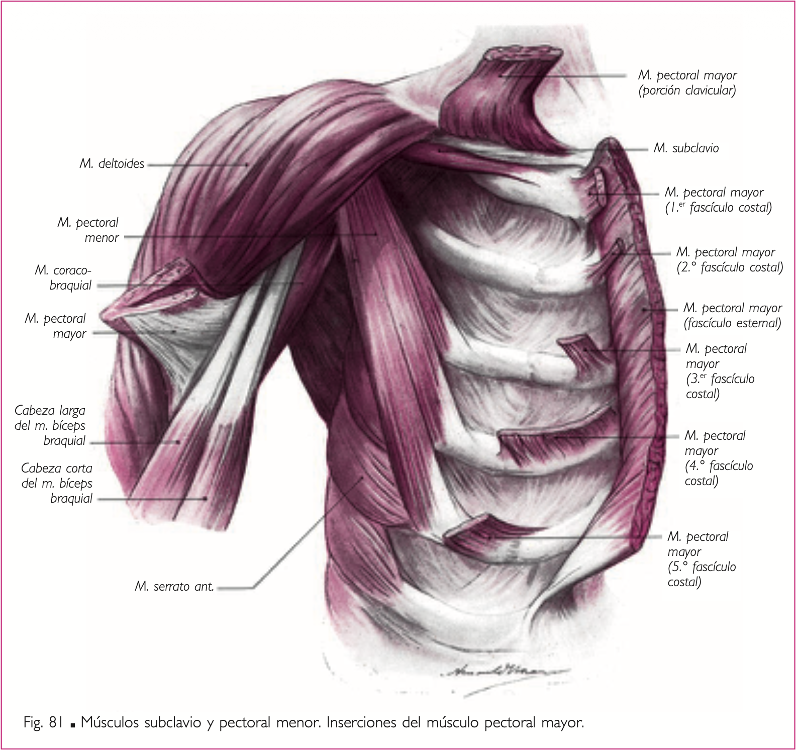
Plano superficial
Músculo Pectoral Mayor
Desde los dos tercios internos del borde anterior de la clavícula, la cara anterior del esternón y del primer al sexto cartílago costal, hacia el labio externo de la corredera bicipial. Aductor y rotador interno del brazo. Eleva el tórax. Inervado por el plexo braquial.
Forma el límite inferoexterno del surco deltopectoral, por donde discurre la vena cefálica.
Imagen
Referencia visualImagen 02
{kind=link}
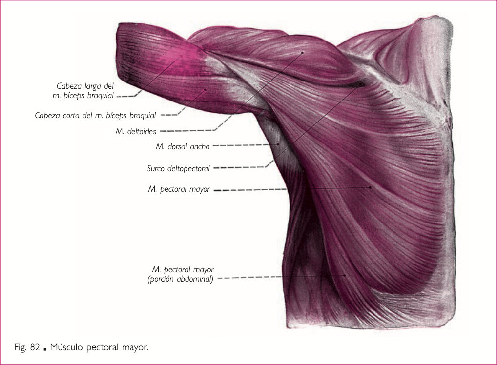
Preparado
Referencia visualImagen 03
{kind=link}
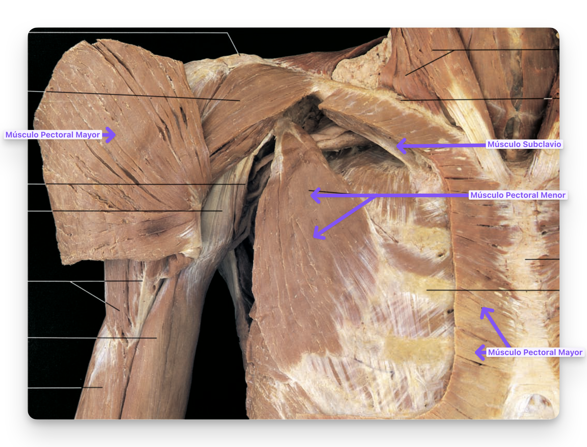
Grupo Interno
Músculo Serrato Mayor - Anterior
De manera proximal se inserta en la cara posteroexterna de la primer a la decima costilla, de manera distal se inserta en el borde interno de la cara anterior de la escápula. Rota y eleva el hombro, eleva las costillas. Invervado por el plexo braquial.
Imagen
Referencia visualImagen 04
{kind=link}
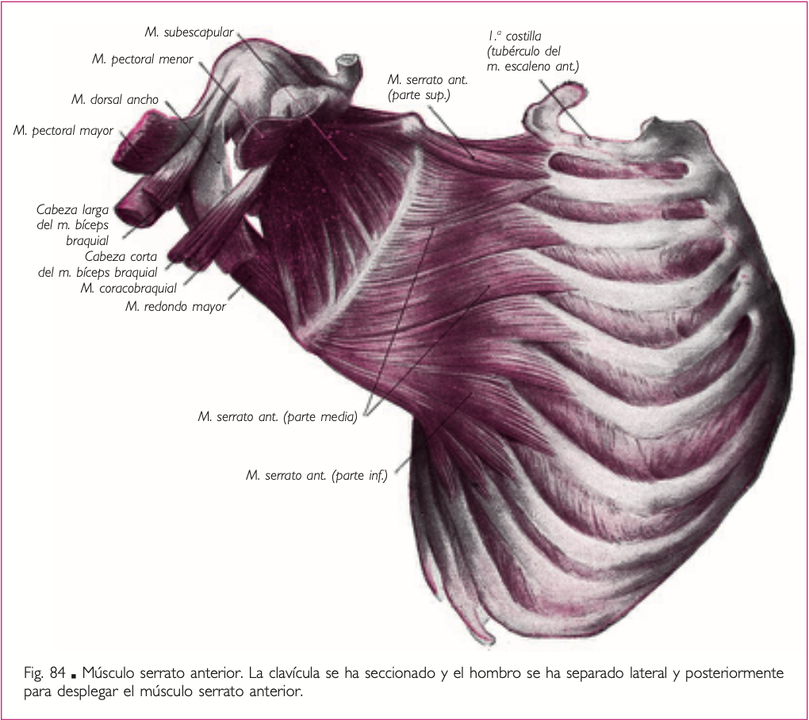
Grupo Posterior
Músculo SubEscapular
Desde la cara anterior de la escápula hacia el troquín del húmero. Rotación interna del brazo. Invervado por el plexo braquial.
Imagen
Referencia visualImagen 05
{kind=link}
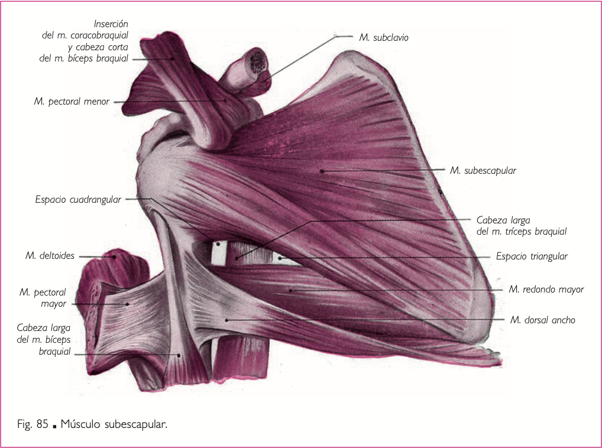
Músculo SupraEspinoso
Desde la fosa supraespinosa de la escápula hacia el troquiter humeral. Abductor del brazo, invervado por el plexo braquial
Músculo InfraEspinoso
Desde la fosa infraespinosa de la escápula hacia el troquiter humeral. Abductor y rotador externo del brazo. Inervado por el plexo braquial.
Músculo Redondo Menor
Desde el borde externo de la fosa infraespinosa de la escápula hacia el troquiter humeral. Abdcutor y rotador externo del brazo. Invervado por el nervio circunflejo o axilar.
Músculo Redondo Mayor
Borde externo de la de la fosa infraespinosa hacia el labio interno de la corredera bicipital. Aductor y rotador interno del brazo, eleva el hombro y la escápula. Inervado por el plexo braquial.
Imagen
Referencia visualImagen 06

Regiones Topográficas
Ambos músculos (redondo mayor y menor) delimitan regiones topográficas junto con el músculo tríceps braquial, el húmero y la escápula:
- Triángulo Homotricipital (Espacio Triangular):
- Contiene la arteria escapular inferior.
- Triángulo Humerotricipital o de Avelino Gutierrez (Intervalo Triangular Externo):
- Contiene el nervio radial y la arteria humeral profunda.
- Cuadrilátero Humerotricipital o de Velpeau (Espacio Cuadrangular):
- Contiene el nervio circunflejo y la arteria circunfleja posterior.
Los Velpeau entre Avelino - Están por encima del Triangulo de Avelino Gutierrez
Imagen
Referencia visualImagen 07
{kind=link}
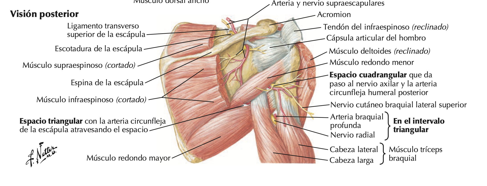
Músculo Dorsal Ancho
Desde la A. Espinosas de T7 a L5, la cresta sacra media, el tercio posterior de la cresta iliaca y la cara externa de la novena a la doceava costilla, hacia el angulo inferior de la escápula y el fondo de la corredera bicipital. Rotación interna y flexión posterior del brazo, eleva el tronco. Invervado por nervios raquídeos.
Imagen
Referencia visualImagen 08
{kind=link}
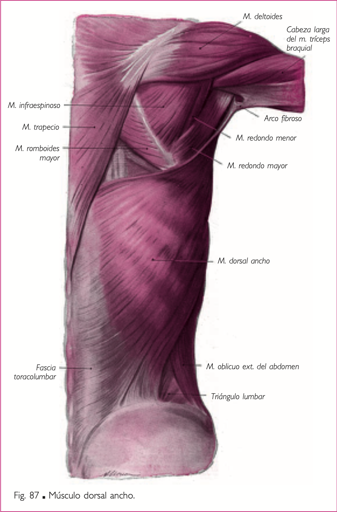
Preparado
Referencia visualImagen 09
{kind=link}
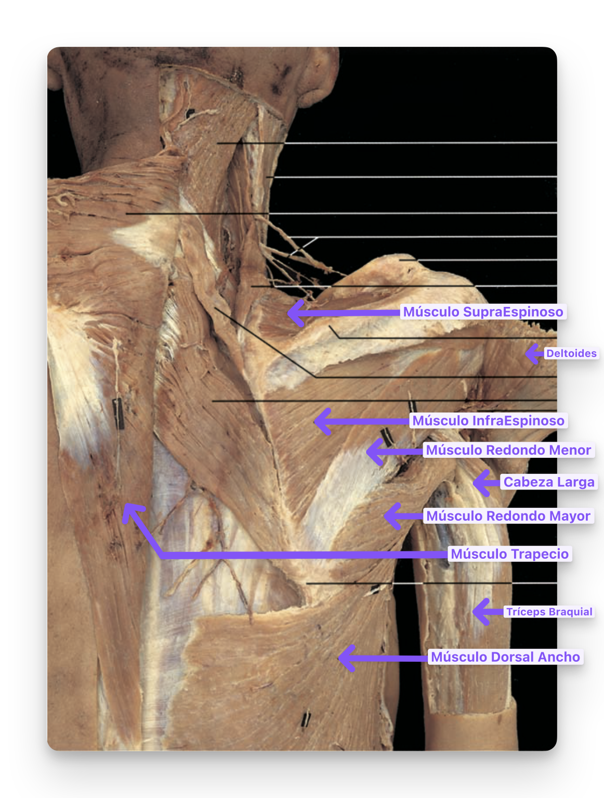
Grupo Externo
Músculo Deltoides
Desde el tercio externo del borde anterior de la clavícula, el acromion de la escápula y el vertice inferior de la espina de la escápula, hacia la V Deltoidea del Húmero. Abductor del brazo, invervado por el nervio circunflejo.
Imagen
Referencia visualImagen 10
{kind=link}
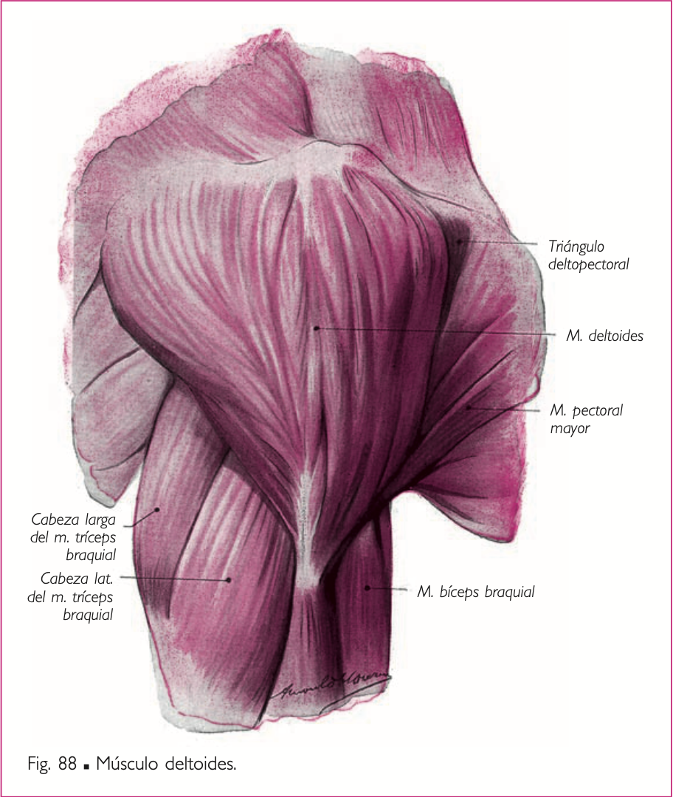
Músculos del Brazo
- Grupo Anterior - Inervados por el Nervio Musculocutáneo.
- Plano profundo
- Músculos Coracobraquial
- Músculos Braquial Anterior
- Plano Superficial
- Músculos Bíceps Braquial
- Plano profundo
- Grupo Posterior - Inervado por el Nervio Braquial.
- Músculo Tríceps Braquial
Grupo Anterior
Plano Profundo
Músculo Coracobraquial
Desde la apófisis coracoides (comparte con la porción corta del biceps) de la escápula hacia el tercio medio de la cara anteriointerna de la diáfisis humeral. Flexor y Aductor del Brazo. Inervado por el Nervio Musculocutáneo. Está perforado por el nervio musculocutáneo, formando el canal de Casserius.
Músculo Braquial Anterior
Desde el borde anterior y las caras anteriores del Húmero, hacia la cara inferior de la A. Coronoides del Cúbito. Flexor del antebrazo sobre el brazo. Inervado por el Nervio Musculocutáneo.
Imagen
Referencia visualImagen 11
{kind=link}
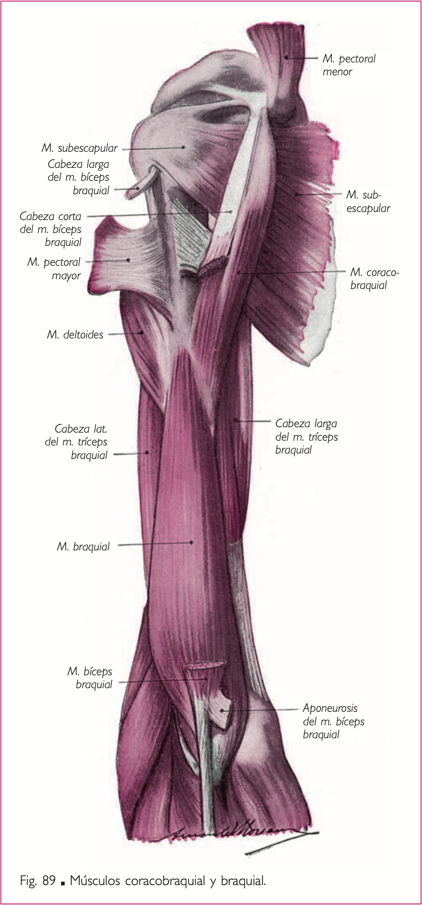
Plano Superficial
Músculos Bíceps Braquial
La porción corta va desde la A. Coracoides y la porción larga desde tubérculo supraglenoideo de la escápula. Las dos porciones confluyen y se dirigen hacia la tuberosidad bicipital del radio. Flexor del antebrazo sobre el brazo y supinador. Inervados por el Nervio Musculocutáneo.
La porción larga del biceps es un medio intraarticular, atraviesa a la cápsula articular de la articulación glenohumeral.
El tendón del biceps braquial hacia distal, delimita los canales bicipitales:
- Interno: junto al músculo pronador redondo y el braquial anterior. Forma el límite externo.
- Contiene la vena basílica (superficial)
- Nervio Mediano,
- Arteria Humeral
- Arteria Recurrente Cubital Anterior
- Externo: junto con el músculo supinador largo y el braquial anterior. Forme el límite interno.
- Contiene la vena cefálica (superficial),
- Nervio radial
- Arteria recurrente radial anterior.
Imagen
Referencia visualImagen 12
{kind=link}
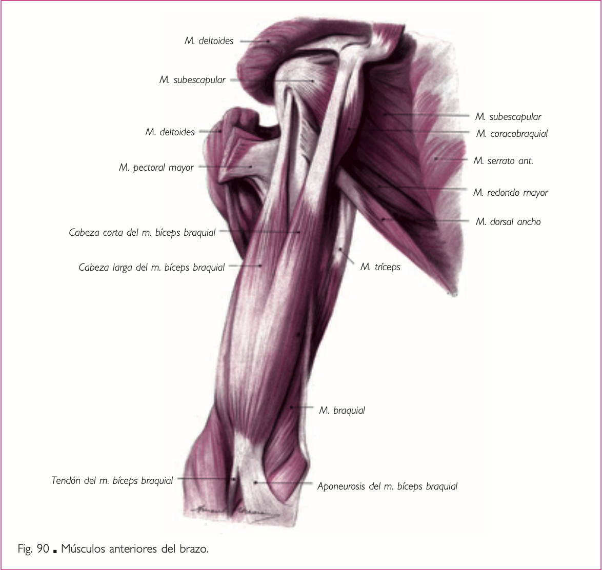
Preparado
Referencia visualImagen 13
{kind=link}
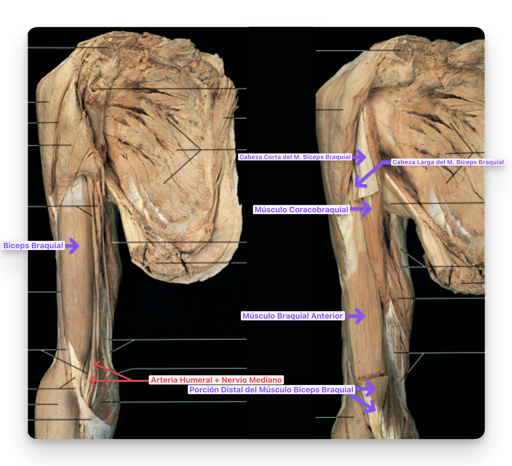
Grupo Posterior
Músculo Triceps Braquial
La porción larga va desde el tubérculo infraglenoideo de la escápula, el vasto externo desde la porción superoexterna del húmero y el vasto interno desde la porción inferointerna del húmero. Se dirigen hacia el olécranon del cúbito. Extensor del antebrazo sobre el brazo. Inervado por el nervio radial.
Imagen
Referencia visualImagen 14
{kind=link}
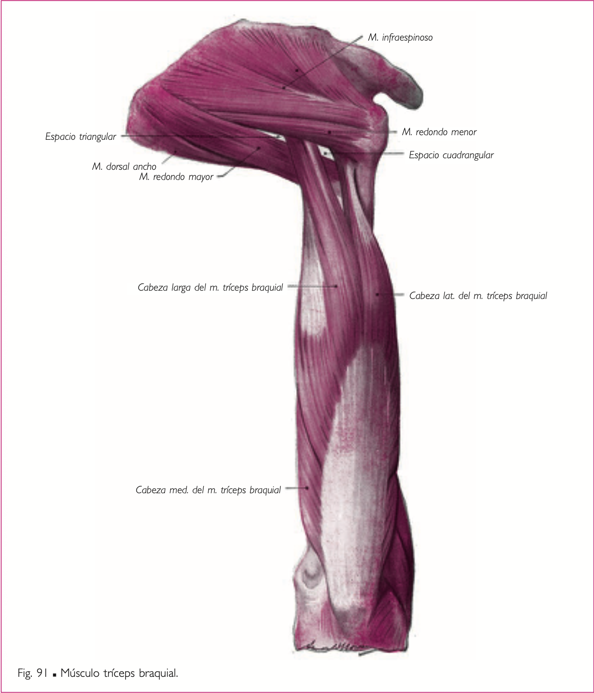